オリーブの実がありますが収穫する気はないです。
2024/11/10
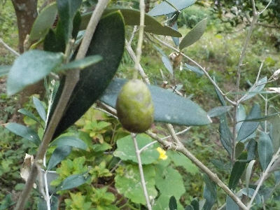
何個か実が出来ていますが、黒ずんでるし張りがないので美味しそうに見えないです。
食べる気はしないので、この実は来年タネ蒔きに使おうかな。
2024/11/10

何個か実が出来ていますが、黒ずんでるし張りがないので美味しそうに見えないです。
食べる気はしないので、この実は来年タネ蒔きに使おうかな。
2024/09/12
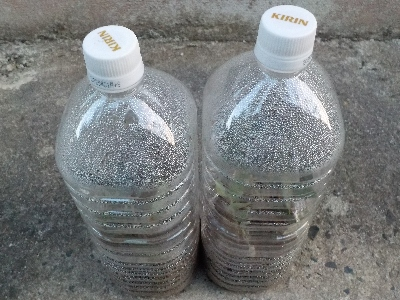
剪定した枝で挿し木しました。
ペットボトルに水滴が沢山付いてると、植物が息をしていて、水蒸気を出している感じがして好きです。
想像ですけど。
2024/08/17
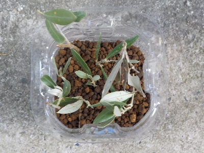
ピクアルがちょっと大きくなったので、剪定した枝で挿し木をしました。
今1本しかないので、何本か増やしたいです。
2024/06/10
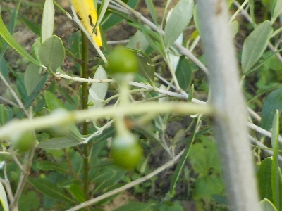
我が家でオリーブの実が出来るのは初めてです。
沢山あるので、たぶん収穫までいくでしょう。何して食べようかな。
手間がかからなくて、美味しい食べ方があるといいんだけどな。
2024/06/01
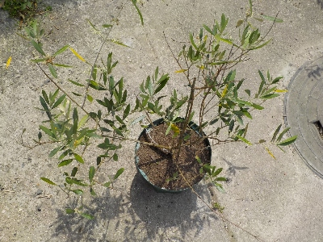
花が咲いているので植え替えしたくなかったですが、今頃が植え替え時期みたいなので植え替えしました。
次に植え替えするときは開花前にしたいかな。
2023/11/05
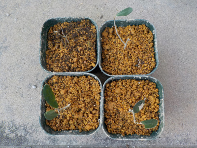
なんか面倒でかまっていませんでした。
ペットボトルの挿し木が全滅で、普通の挿し木が4本生き残りました。
もうちょっと早い時期に植え替えしていたら、もっと多く残ったかも。
2023/06/04
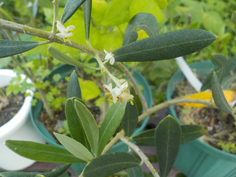
この木（ピクアル）は去年花が咲いたけど実が出来なかったので、今年も実が出来る気がしないな。
2023/02/26
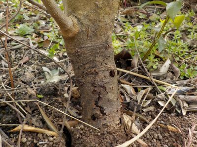
オリーブの葉っぱの色が薄くなっていると思ってよく見たら、根元が虫に食べられていました。
すくすく育って2ｍくらいになっていましたが、もう枯れそうです。なんだかあっけないです。今まで育てたのが無駄になった感じがしました。
生き物なので仕方ないですね。
このオリーブは挿し木して増やしているので、完全になくならないのがちょっと救いです。
2022/10/10
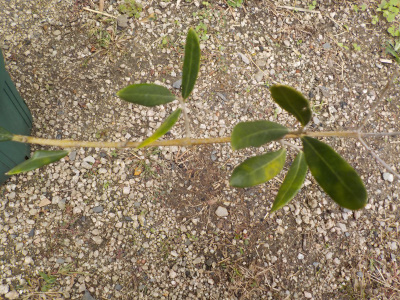
園芸店に行ったら実付きのオリーブが販売していました。
我が家のオリーブは花が咲いたんですが実が出来ませんでした。残念です。
来年咲いたら筆で受粉させようと思います。
2022/10/08
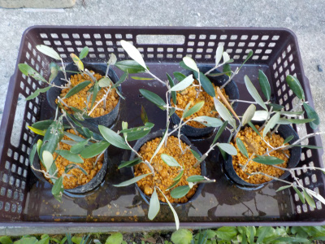
挿し木は6月って言いますけど今でもそうなのかな。温暖化で以前とは違うんじゃないかと思っています。 なので涼しくなった秋にオリーブの挿し木をしました。
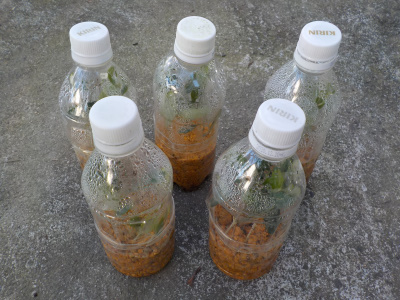
ペットボトルの密閉挿しもしました。どっちの成功率が高いでしょうね。
2022/05/22
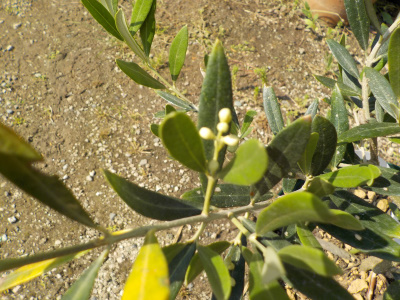
オリーブのピクアルにツボミがありました。
花が咲いて実が出来て欲しいですね。
2022/05/22
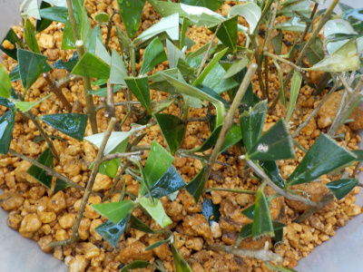
前回、長めの枝に葉っぱを多めに付けて挿し木をして失敗したので、今回は短い枝に葉っぱ少な目で挿し木をしました。
今回はどうかなー。
以前ペットボトルで挿し木した時は4本成功しているので、これとは別にペットボトルの挿し木もやろうと思っています。
2021/11/07
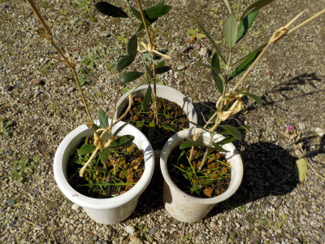
木が小さいうちは何ともなかったですが、枝が伸びたら倒れだしました。
本とかネット情報でオリーブには支柱が必要って書いてありますが、本当に必要なんですね。
2021/10/03
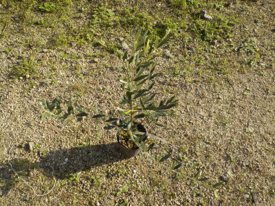
オリーブの本を読んでいると、2種類あった方が実が良く出来るって内容が多くあります。
既に家にあるオリーブのフラントイオは、1本でも実が出来る種類なので違う種類を買わなくてもいいと思っていました。
でも、挿し木で増やした何本ものオリーブが成長した時に、実がちょとしか出来なかったらガッカリですよね。（意外と沢山出来るかもしれないですが。）
保険のため1種類追加することにしました。
で、色々調べた結果ピクアル種を買いました。
実が出来るのは何年後かなー。
2021/09/20
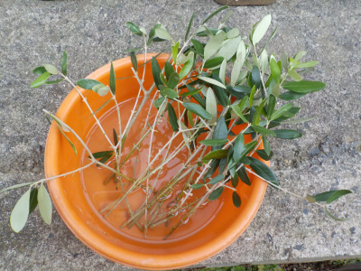
今年のオリーブの挿し木は1本しか成功しませんでした。
悔しいのでまた挿し木をします。
今まではペットボトルを使った密閉挿しでしたが、今回は底面給水鉢で挑戦です。
2021/09/19
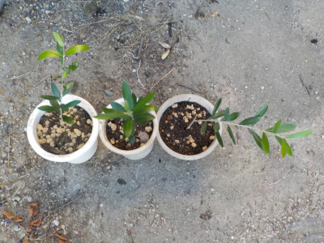
順調かどうか分かりませんが、挿し木のオリーブが育っているので鉢を大きくしました。
ドンドン大きくなって欲しいです。
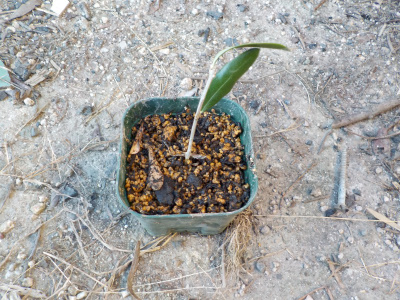
今年の6月、7月に挿し木したものは、1本しか根っこがでませんでした。
沢山挿し木したのに、とっても残念。
また挿し木をしようと思います。
2021/07/03
オリーブの挿し木を追加しました。
2021/06/27
オリーブの挿し木をまた始めました。
2021/05/23
オリーブの挿し木に根っこがありました。
2021/01/31
オリーブの挿し木が成長しています。
2020/07/04
オリーブの密閉挿しをしました。
2020/05/16
挿し木のオリーブの葉っぱが落ちました。
2020/02/27
水挿しのオリーブです。
2019/11/02
スポンジ挿し木のその後。
2019/10/20
1週間前にオリーブの挿し木をしました。
2019/08/04
オリーブ フラントイオをペットボトルで挿し木。
オリーブは葉っぱが美しいいなんて言うけど、特別そんなこと思わない。
漬物を作って食べたい。